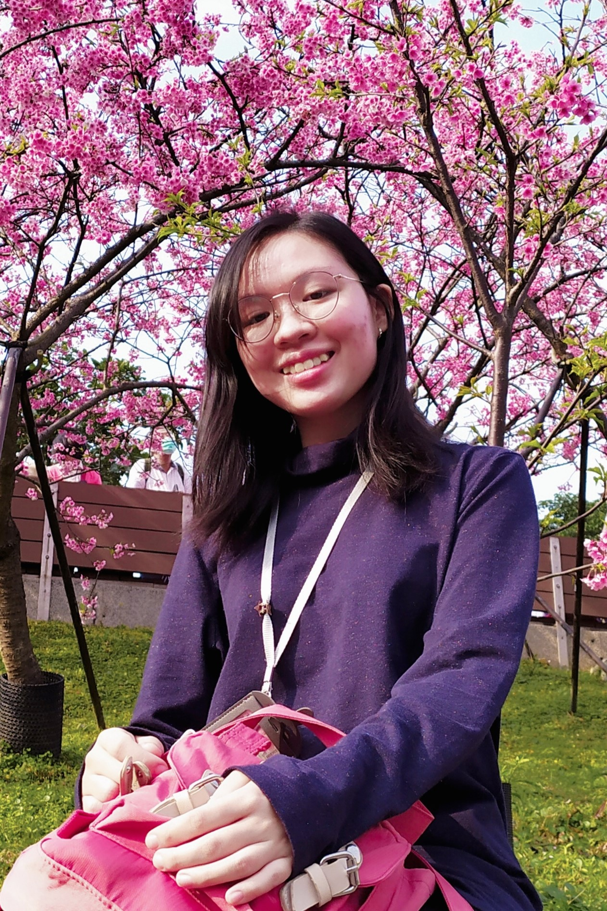

Sharon Isabelle Timotius is currently a sophomore in National Taiwan Univeristy's Department of Electrical Engineering. She was born on 28th September 2001 in Jakarta, Indonesia. In 2019, She graduated from SMAK PENABUR Gading Serpong, Tangerang, Indonesia.
Some of her hobbies are reading, gardening, and listening to good music. Novels are some of her favorite things to read and Haruki Murakami is her favorite author. She is interested in all kinds of plants, but prefers to keep small houseplants because it is easier to manage. She got most of her knowledge about house plants from a youtuber. Music is a huge part of her life. It helps her calm down when she is too anxious, helps boost motivation when lazy, and helps focus when studying. She mostly listens to music for a youtube playlist she made.